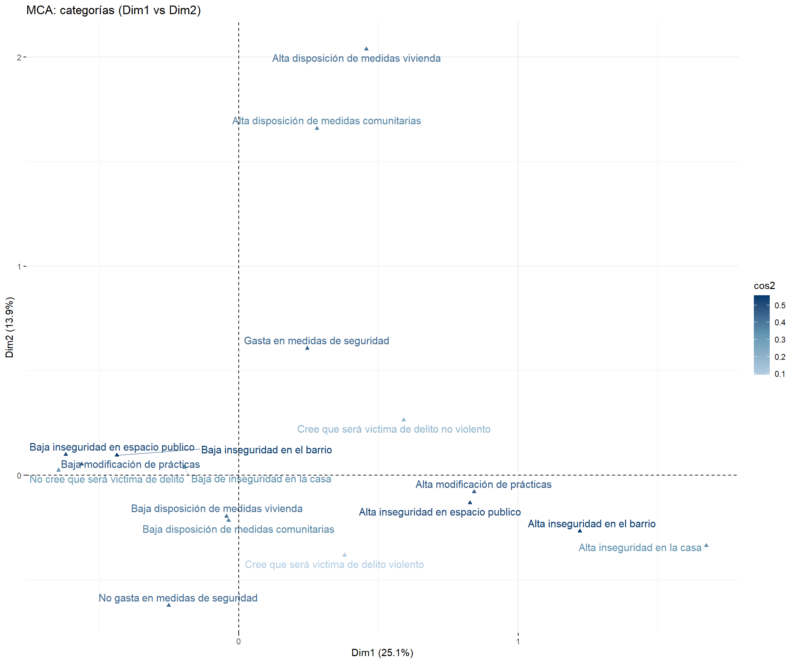
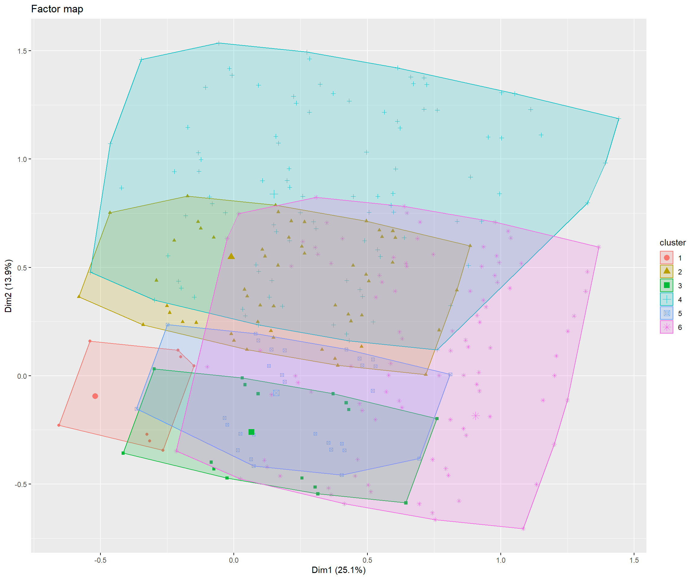
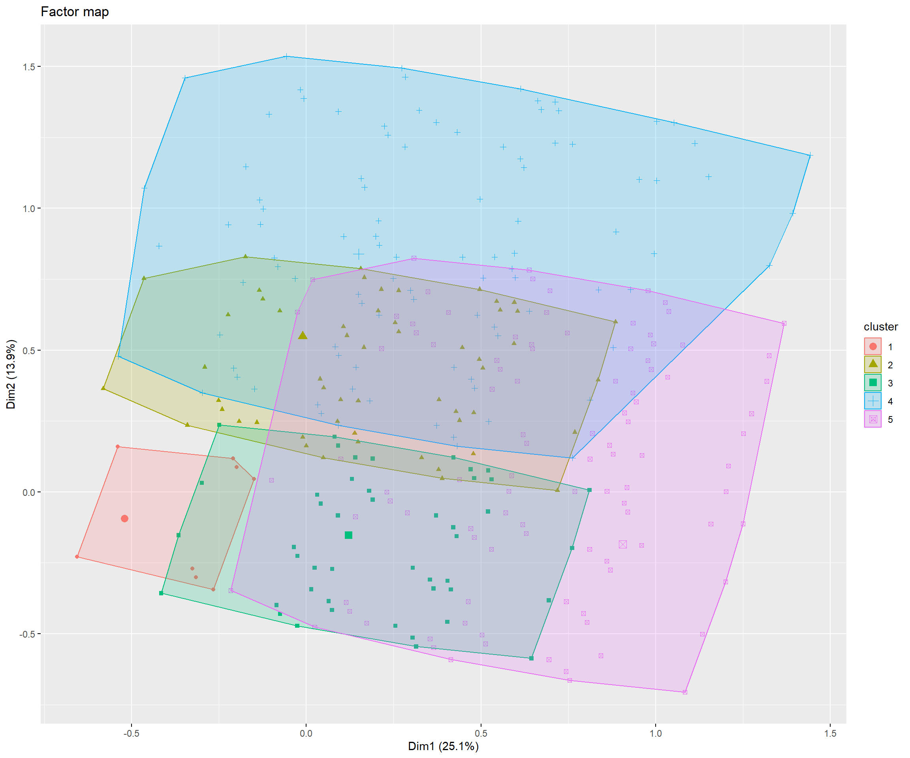
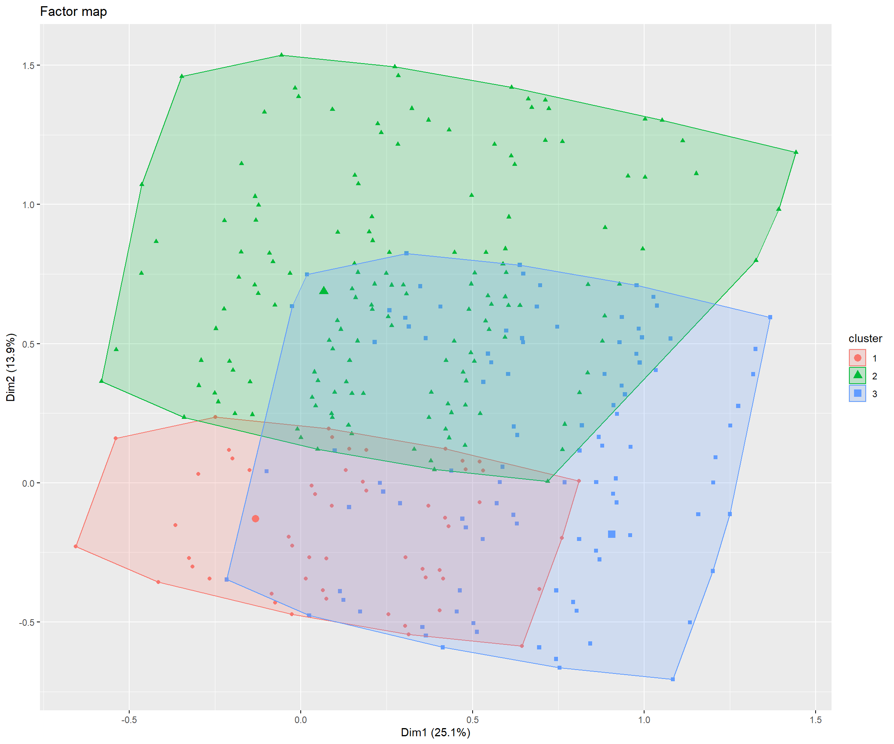

 Análisis MCA y HCPC ENUSC
Análisis MCA y HCPC ENUSC
Introducción
Este documento…
Tablas

El cluster 1 se caracteriza por una sobrerepresentación de: No dispone de medidas personales (v_test = ); Igual o bajo el 50% en todos los lugares (v_test = 28.41) and No cree que será victima de delito (v_test = 28.08)
El cluster 2 se caracteriza por una sobrerepresentación de: No dispone de medidas comunitarias (v_test = ); Igual o bajo el 50% en todos los lugares (v_test = 29.25) and Dispone de medidas personales (v_test = 28.43)
El cluster 3 se caracteriza por una sobrerepresentación de: Dispone de medidas comunitarias (v_test = ); Dispone de medidas personales (v_test = ) and No cree que será victima de delito (v_test = )
El cluster 4 se caracteriza por una sobrerepresentación de: Cree que será victima de delito violento (v_test = ); Dispone de medidas personales (v_test = 38.34) and Muy inseguro/Inseguro en el Barrio (v_test = 13.26)
El cluster 5 se caracteriza por una sobrerepresentación de: No dispone de medidas personales (v_test = ); Sobre el 50% en todos los lugares (v_test = 21.47) and Muy inseguro/Inseguro en el Barrio (v_test = 19.53)
El cluster 6 se caracteriza por una sobrerepresentación de: Dispone de medidas personales (v_test = ); Sobre el 50% en todas las situaciones (v_test = ) and Cree que será victima de delito no violento (v_test = )

El cluster 1 se caracteriza por una sobrerepresentación de: No dispone de medidas personales (v_test = ); Igual o bajo el 50% en todos los lugares (v_test = 28.41) and No cree que será victima de delito (v_test = 28.08)
El cluster 2 se caracteriza por una sobrerepresentación de: Dispone de medidas personales (v_test = ); Igual o bajo el 50% en todas las situaciones (v_test = ) and No cree que será victima de delito (v_test = )
El cluster 3 se caracteriza por una sobrerepresentación de: Cree que será victima de delito violento (v_test = ); Dispone de medidas personales (v_test = 38.34) and Muy inseguro/Inseguro en el Barrio (v_test = 13.26)
El cluster 4 se caracteriza por una sobrerepresentación de: No dispone de medidas personales (v_test = ); Sobre el 50% en todos los lugares (v_test = 21.47) and Muy inseguro/Inseguro en el Barrio (v_test = 19.53)
El cluster 5 se caracteriza por una sobrerepresentación de: Dispone de medidas personales (v_test = ); Sobre el 50% en todas las situaciones (v_test = ) and Cree que será victima de delito no violento (v_test = )

El cluster 1 se caracteriza por una sobrerepresentación de: Dispone de medidas personales (v_test = ); Igual o bajo el 50% en todas las situaciones (v_test = ) and No cree que será victima de delito (v_test = )
El cluster 2 se caracteriza por una sobrerepresentación de: No dispone de medidas personales (v_test = ); Muy seguro/Seguro en el Barrio (v_test = 4.43) and No dispone de medidas comunitarias (v_test = 4.38)
El cluster 3 se caracteriza por una sobrerepresentación de: Cree que será victima de delito violento (v_test = ); Dispone de medidas personales (v_test = 38.34) and Muy inseguro/Inseguro en el Barrio (v_test = 13.26)
El cluster 4 se caracteriza por una sobrerepresentación de: Dispone de medidas personales (v_test = ); Sobre el 50% en todas las situaciones (v_test = ) and Cree que será victima de delito no violento (v_test = )

El cluster 1 se caracteriza por una sobrerepresentación de: Dispone de medidas personales (v_test = ); Igual o bajo el 50% en todas las situaciones (v_test = ) and No cree que será victima de delito (v_test = )
El cluster 2 se caracteriza por una sobrerepresentación de: No dispone de medidas personales (v_test = ); Muy seguro/Seguro en el Barrio (v_test = 4.43) and No dispone de medidas comunitarias (v_test = 4.38)
El cluster 3 se caracteriza por una sobrerepresentación de: Dispone de medidas personales (v_test = ); Sobre el 50% en todas las situaciones (v_test = ) and Cree que será victima de delito violento (v_test = )

El cluster 1 se caracteriza por una sobrerepresentación de: No dispone de medidas personales (v_test = ); Igual o bajo el 50% en todas las situaciones (v_test = ) and No cree que será victima de delito (v_test = )
El cluster 2 se caracteriza por una sobrerepresentación de: Dispone de medidas personales (v_test = ); Sobre el 50% en todas las situaciones (v_test = ) and Cree que será victima de delito violento (v_test = )